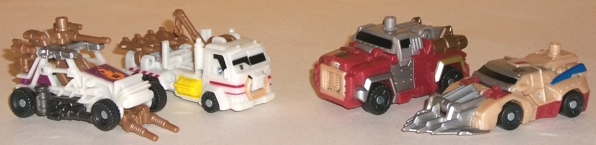
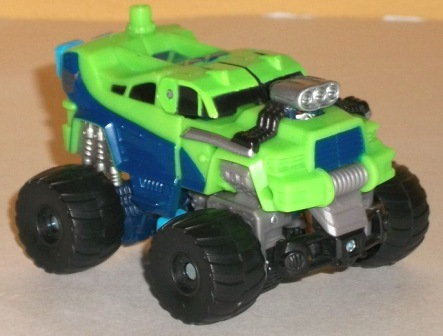
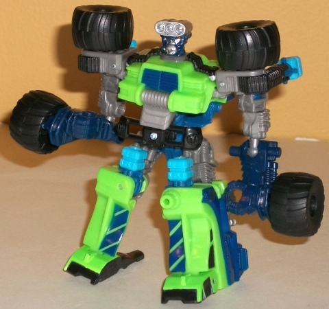
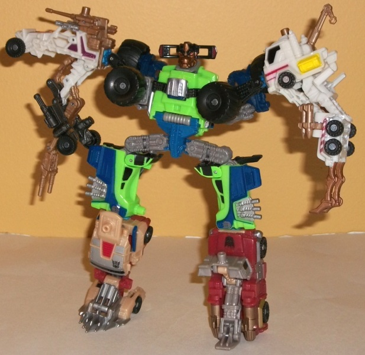

Mudslinger
w/ Destructicons
Mudslinger
w/ Destructicons
Destructicons

Allegiances
: Decepticons
Difficulty of Transformations
: Automatic
Color Schemes
: Dark rusty red, dull
milky off-white, milky bronze, light milky tan, gray, and some silver,
black, dark metallic gunmetal gray, fuchsia, light orange, bright yellow,
red, dark blue, metallic bronze, and pale metallic bronze
Individual Rating
: 6.6
All of the Destructicons
are supposed to be demoliton derby-style vehicles-- which is something
pretty much wholly new to Transformers, which I LOVE. So let's start first
with the crane-truck. Like the other Destructicon limbs, there's a ton
of great mold detailing on this guy-- pipes, pistons, detailed smokestacks--
he's got tons of mold details. His paint detailing is... adequate, but
he could use a bit more, specifically on the top of the vehicle mode. The
color scheme itself is rather boring, however, with the pale off-white
coloration not doing it any favors. The tan serves as a decent secondary
color, though, and the couple of red and black paint apps do help with
the contrast a little (though the yellow on the sides is so bright it's
rather obnoxious)-- I just wish that instead of that dull off-white being
the primary color, it was the tan or something instead. The proportions
themselves are pretty realistic, particularly for the size-- however, FUNCTIONALLY
it doesn't work. Why are there missile racks pointed at the back side of
the cab? How does THAT work? In addition, the crane arm (which can move
up and down) is in the MIDDLE of the vehicle, so I'm not sure what exactly
it's supposed to be able to pick up. In arm mode, the combination port
from the host robot goes right in the front grill, and the truck cab makes
for an excellent shoulder. Unfortunately-- as is the case with many Power
Core Combiner arms-- the arm itself is a bit too skinny, and the hands
are awkward. Two weird, long claws? Yeah, that doesn't work for me, sorry.
This is probably my least favorite of the Destructions. The little missiles
at the shoulders are a nice carry-over from vehicle mode, though.
Now I'll move on to
the other arm Destruction, the weaponized buggy-like vehicle. Again, the
proportions are pretty darned good for this mode, and he's got plenty of
mold detailing including several "bars" all over the main frame of this
mode to give it a more skeletal feel, like it was hastily slapped together
(as many demolition derby vehicles are). Having all the firepower-- both
under the mode and on top of it-- really give it a bit of destructive capablity
above and beyond the other Destructicons. The top-mounted gun with the
Powerlinx port on it can move up-and-down, but that's about all the movement
you'll get out of this one in vehicle mode. His main color scheme is still
predominantly that blah off-white, but the fuchsia really helps with the
contrast-- and along with the milky tan, silver, and black, keeps this
guy from having too much uninterrupted white anywhere. I particularly like
the
flaming Decepticon symbol on the front hood-- nice touch. In arm mode,
most of the undercarriage bits from the vehicle mode extend downards to
form a very odd-looking, overly skinny arm that doesn't even attempt to
form a passable hand-- instead he's simply got two skinny guns (pointed
the wrong direction, natch) that are the "hand". The bulk of the vehicle
mode makes for a nice shoulder, though.
Next up is the truck
with rocket-like engines on the back. Out of the all the Destructicons,
this guy definitely has the most out-of-whack proportions, with the main
body of the truck being far too chunky while the windows and roof look
too squashed down in comparison. The mold detailing is also a tad sparse
in comparison to the other Destructicons, though it's by no means sparse.
The color scheme is my favorite among the Destructicons', with the dark
red pulling off a really nice contrast with the milky gray, and the pale
bronze used for two of the rocket boosters and a few other parts (along
with some silver) really just pops, but still keeps the "rusty, worn" theme
of the Destructicons. In leg mode, this Destructicon doesn't do much--
after plugging the connection port into his unfortunately unsightly grill,
part of the rear folds down the become the foot, while the cockpit section
rotates up slightly to become the "kneecap"-- but it works, pretty well.
Unfortunately, this one has a trouble staying in its connection port, which
can be a bit annoying, having it pop out so easily.
Finally there's the
vehicle with the larged spikey "wedge" on the front end. It's quite a cool
design, and the silver paint on the front part really gives it that "shiny
sharp instrument of death" look. The proprtions are more-or-less in line
with what I think one of these would actually look like. The milky tan
serves as a decent enough base color, though making it just a TAD darker
would've helped some. The dark rusty red and silver serve as pretty good
secondary colors, and the dark blue and red really just add that little
extra color-variety to kick it up another notch. He has plenty of paint
apps too, so no worry there. He's got roughly the same amount of mold detailing
as the other Destructicons, with little "rivets" molded in everywhere.
As for his leg mode, like the other Destructicon limb it's pretty basic--
the blades fold forward to become the foot, while part of the roof section
moves up a bit to become the kneecap. It totally works, and the connection
port is nice and stable, making this one my personal favorite of the Destructicons.
If you're going to get
the Destructicons, I'd get them more for the awesome theme (demolition
derby vehicles) than the toys themselves. Although all of the limbs have
decent (albeit sometimes impractical) vehicle modes, the two arm-drones
have very weak and awkward arm modes, and the truck leg drone has a hard
time staying in its connection port for long. They do have a good "team"
color scheme that fits their alt modes, however, as well as excellent mold
and paint detailing. The leg-drone with the blades on the front end is
the only one I think is, in all aspects, a good limbformer. Not the best
Power Core Combiner team, but definitely not the worst, either.
Mudslinger



Allegiance
: Decepticon
Difficulty of Vehicle/Robot Transformation
:
Easy
Difficulty of Torso Transformation
:
Easy
Color Scheme
: Light green, black,
dull milky brownish gray, dark blue, and some light sky blue, light red,
dull metallic copper and silver
Individual Rating
: 6.4
Mudslinger's vehicle
mode is a monster truck. Although the tires are still quite large, they're
honestly a little UNDERsized in comparison to most monster trucks. The
actual proprtions of the "core" part of the vehicle are solid, however
(with the exception of the engine, which sticks up from the front hood
too much-- plus if you look carefully, you can see Mudslinger's eyes poking
out from underneath the engine, as well). The major downside to this mode
is that Mudslinger's robot mode extras are pretty darn blatant. For one,
you've got the combiner ports just poking out of the rear end and underneath
the front tires rather blatantly. Also, what should be a pretty good clearance
in between the bottom of the "core vehicle" and the surface he's sitting
on is instead filled with his arms, combined mode head, part of the torso
mode shoulders in a rather ugly manner. (His vehicle mode also doesn't
have much of a rear end to speak of, so you can see his robot hands from
that end pretty easily, too.) The mold detailing-- though very intricate
in a few places, like the "springs" above his large tires-- is surprisingly
sparse in this mode. The necessary details are there, but little more.
However, the color scheme is pretty nice, with the rather loud light green
being fairly appropriate for a monster truck. The black and dark blue do
a good job of helping to contrast against this light color, and the designs
on the sides of the car and the top help to break up the green a bit more
here. The exhaust vents that extend from his main engine to the sides of
this mode are a pretty nice touch, too.
Unfortunately, in Mudslinger's
robot mode he doesn't get much better. The most obvious visual oddities
are the big tires hanging unceremoniously off his lower arms, but there's
plenty of others-- the combiner ports behind his shoulders-- the really
undersized upper legs and oversized feet-- and the head design. The engine
block on top of his head quite frankly looks dumb, and though his eyes
are narrowed in a fairly fierce expression appropriate for a Decepticon,
his mouth has a few too many indiscernible mold details on it, like some
of the other Power Core Combiners. He also just has a generally stumpy
look that's pretty unappealing. However, on the plus side the big wheels
are the perfect fit for his shoulders, to make him look a bit more "buff",
and his robot bits have tons of mold details that his vehicle mode was
lacking, particularly on the arms and upper legs, where there's springs
and pistons galore. His articulation looks good on paper-- he can move
at the neck, shoulders (at three points), elbows, hips (at two points),
knees (at three points), and slight movement at the ankles. However, the
shoulder articulation is restricted quite a bit by how oddly the ball joints
connect to the underside of the shoulder pieces, and the stumpiness of
the legs hinders ankle movement a bit as well.
There's a few interesting
things about Mudslinger's torso mode for his combined form, but it still
suffers from some oddities, which I'll cover first. His legs are just a
mess, quite frankly, and obviously his robot legs bend in a funny position.
They don't look at all like "normal" upper legs, and the lower parts of
the legs don't tab into the slots on the upper legs that they're
supposed to. Also- MAJOR MOLD FLAW WARNING here-- a significant number
of Mudslingers seem to have mold flaws on the peg-joints that connect the
hip-ratchet pieces to the lower pieces of the upper legs. These can crack
very easily if you end up with a dud, and unfortunately it cracks right
on the peg-joint, meaning it's pretty much impossible to repair with glue
or anything short of returning it and buying another Mudslinger. That's
why happened to my first Mudslinger, though my second doesn't have that
problem. That said, be careful when moving these parts, as a lot of stress
is put on them during his various transformations. If you have one of the
"duds", it'll crack before you even transform Mudslinger the 2nd or 3rd
time, but regardless keep an eye on it, as it's definitely a weak point.
Moving on, the robot arms just sort of hang behind the shoulders unceremoniously,
and don't really peg/lock into place anywhere, which is also a bit of an
eyesore in this mode. The wheels on the shoulders look decent enough and
give Mudslinger some bulk in that are to-- at least partially successfully--
"hide" his skinny shoulder pieces that fold out with his arm combiner ports
on them. The chest of the torso is done quite well, however-- moving Mudslinger's
"normal" robot head/engine to the center of the chest and using the rest
of the vehicle front was a stroke of genius and works well. The combined
face sculpt (made from his vehicle front bumper) I'm of a mixed opinion
about. On the ond hand, I really like the "bull-like" proportions and details
on Mudslinger's lips-- it fits his simple, angry personality well. However,
having the odd hollow-bumper "horns" doesn't work well, in my opinion.
Connecting at TWO points on each side of the head just looks weird.
Although he has a few
positives-- such as his general color scheme, his vehicle mode (minus the
undercarriage), and the chest designs of his regular robot and torso mode--
Mudslinger generally represents the bad side of the Power Core Combiner
line, with horrible, stubby proportions and lots of extras in all of his
modes that just don't make for a very appetizing package. Skip this guy
unless you're a completist or just really have a thing for monster truck
TFs.
Mudslinger w/ Destructicons Bio
:
There was a time when Mudslinger might
have considered joining the Autobots, but that was long ago. He's a robot
of action, with no time for things like thinking, negotiating, or peace.
In his opinion, the Autobots are a bunch of sissies. With his team in tow
he's got the power to prove just how much tougher than them he is.
Strength: 10.0
Intelligence: 2.0
Speed: 5.0
Endurance: 9.0
Rank: 5.0
Courage: 9.0
Fireblast: 6.0
Skill: 3.0
Reviews by Beastbot
Back to Power
Core Combiners Index